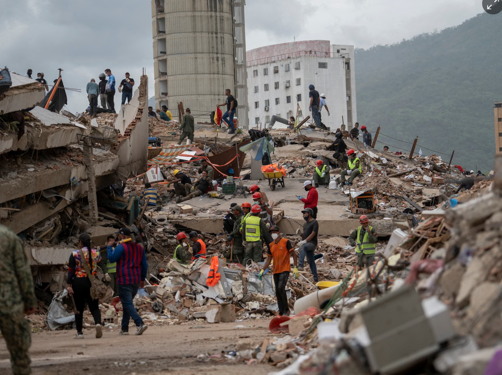

Earthquakes
Venezuela’s Twin Earthquakes: The Human Cost of a Seismic Disaster
The earthquakes devastated communities in northern Venezuela, leaving thousands dead or injured and many families without homes.

On 24 June 2026, two powerful earthquakes struck northern Venezuela within seconds of each other, triggering a humanitarian disaster and leaving communities facing widespread destruction.
The tremors, reported at magnitudes 7.2 and 7.5, damaged homes, hospitals and essential infrastructure, turning coastal communities and areas around the capital, Caracas, into emergency zones.
The disaster highlighted the devastating consequences of powerful seismic events in densely populated regions, particularly where emergency services and infrastructure are already under pressure. In the days that followed, rescue workers and local volunteers searched through collapsed buildings for survivors while families waited for news of missing relatives.
A Disaster Unfolds
The earthquakes caused extensive damage across northern Venezuela, with the coastal state of La Guaira among the hardest-hit areas. Buildings collapsed, roads and transport infrastructure were disrupted, and hospitals and other essential facilities sustained damage. By late July, reports put the official death toll at more than 5,500, with approximately 16,700 people injured. Thousands of people were left without secure housing, while the full scale of the damage and the number of missing people remained difficult to establish.
For survivors, the consequences extended far beyond the initial shaking. Damaged homes, disrupted electricity supplies and pressure on healthcare services made daily life increasingly difficult. Families faced the challenge of finding shelter, obtaining food and medicines, and rebuilding livelihoods after losing homes or businesses. The emergency also demonstrated how an earthquake can trigger a chain of secondary crises. When hospitals, roads and communication networks are damaged simultaneously, delivering aid and coordinating rescue operations becomes considerably more difficult.Earthquakes are natural events, but the scale of a disaster often depends on how prepared communities are to withstand them
GEOSCI · Earth systems perspective
Why was it so devastating?
Why did the earthquakes cause so much destruction? Earthquakes occur when stress accumulated in the Earth's crust is released suddenly along a fault, generating seismic waves that travel through the ground. The resulting shaking can damage buildings, destabilise slopes and disrupt essential infrastructure. Venezuela lies in a tectonically active region influenced by the interaction between the Caribbean and South American plates. This broader tectonic setting makes understanding active faults, ground movement and seismic hazards particularly important.
The severity of an earthquake disaster, however, is not determined by magnitude alone. Several factors influence the damage:
Ground shaking: The strength and duration of shaking affect how buildings and infrastructure respond.
Depth and distance: Shallow earthquakes close to populated areas can produce particularly intense shaking.
Building resilience: Structures that are not designed or maintained to withstand seismic forces are more vulnerable to collapse.
Local geology: Soft sediments can amplify shaking, while unstable slopes may increase the risk of landslides.
These factors help explain why earthquake preparedness requires both geological research and effective urban planning.
Connected signals
Venezuela lies in a tectonically active region where the Caribbean and South American plates interact. This geological setting creates seismic hazards, making earthquake-resistant buildings, early-warning systems and emergency preparedness essential for reducing casualties and damage.
Rescue Efforts
In the immediate aftermath, emergency teams faced the difficult task of locating survivors, treating injuries and delivering supplies to affected communities. As the emergency developed, the focus increasingly shifted towards restoring essential healthcare, supporting displaced families and repairing damaged infrastructure.
In July, the Pan American Health Organization reported that its response was moving into an early recovery phase. Priorities included restoring health services, providing medical supplies, supporting vaccination and addressing the psychological effects of the disaster. Pan American Health Organization Recovery after a major earthquake can take months or years. Rebuilding homes is only one part of the process: schools, hospitals, roads, water systems and local businesses must also be restored. Authorities must assess whether damaged structures can be repaired safely or need to be replaced entirely. The disaster also reinforces the importance of reliable casualty reporting and transparent assessments of damage. Accurate information helps emergency agencies identify the communities most in need and direct limited resources where they can have the greatest impact.
Earthquakes are a natural part of the Earth's dynamic processes. Catastrophic loss, however, is not inevitable. Understanding the science behind seismic hazards and translating that knowledge into practical action remains one of the most important ways to protect lives.